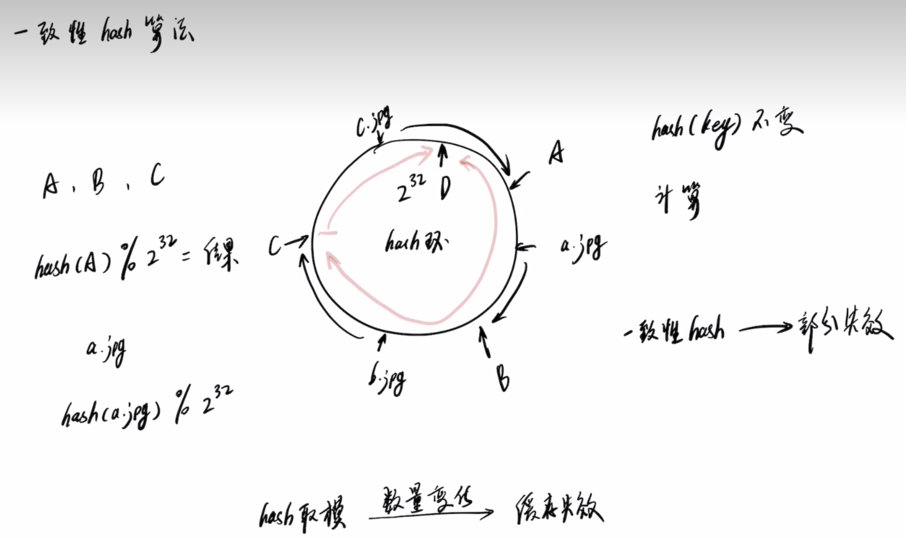
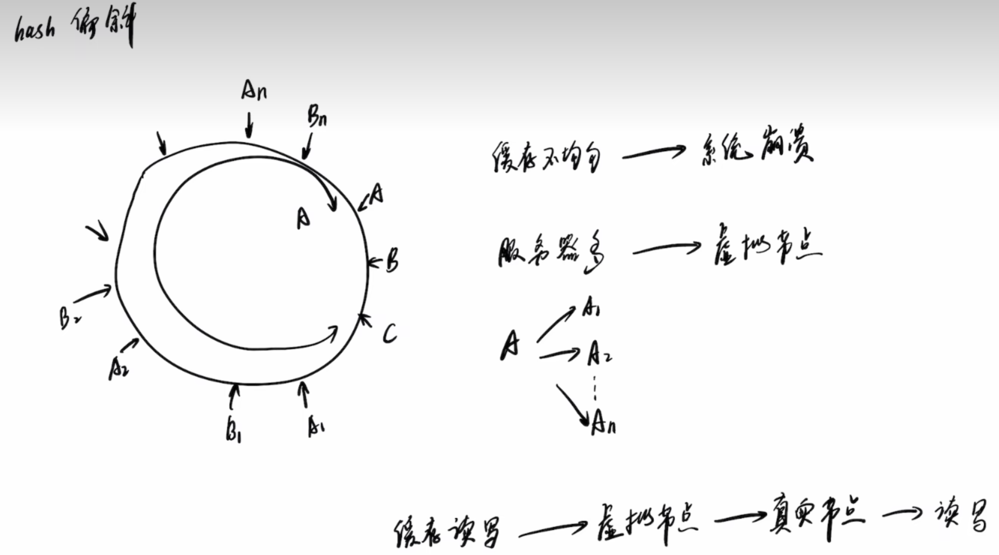

CAP #
| CA | CP | AP | |
|---|---|---|---|
| 场景 | 单机 | 强一致性,金融银行 | 及时响应,容忍一致性,商品查询 |
| 应用 | Mysql | Redis,Hbase,ZooKeeper | CoachDB,Cassandra,DynamoDB |
数据分片 #
数据分片即按照一定的规则将数据路由到相应的存储节点中，从而降低单存储节点带来的读写压力
- 哈希分片
- 根据key的哈希值来决定分配到哪个分片
- 不依赖key的顺序,只依赖哈希函数
- 范围分片
- 根据key的大小顺序来决定属于哪个分片范围
- 依赖于key有明确的大小顺序
- 一致性哈希环
- 将节点和数据项映射到一个虚拟圆环空间上
- 通过这种映射来实现分片和负载均衡
- 对节点添加和删除影响较小
一致性哈希环 #
hash算法的缺陷 好刚: 7分钟视频详解一致性hash 算法
以图片服务器举例,我们希望图片均匀落在不同的图片服务器上.
以图片名为key,hash后再根据机器数取模,在此规则下.
假设图片hash=6,机器数为3, %3=0,则图片放置在0号服务器.
此时,我们增加1台机器,机器数为4,图片hash依旧为6,%4=2,则映射到了2号服务器,
此时原本在0号服务器的图片,去了2号服务器查找不存在,又要通过后端服务查找一遍,可能导致缓存雪崩.
一致性哈希环 则可以减少数据失效程度.  hash偏斜与虚拟节点 
数据结构分类 #
分布式数据库
- MySQL Sharding
- Microsoft SQL Azure
- Google Spanner
- Alibaba OceanBase
KV数据库
- Redis
- Memcache
分布式存储系统
- Ceph
- GFS
- HDFS
- Swift
数据一致性 #
- 强一致性
- 数据一致性
- Raft 协议
- Gossip 协议
Gossip #
Gossip 的协议原理有一种传播机制叫谣言传播，指的是当一个节点有了新数据后，这个节点就变成了活跃状态，并周期性地向其他节点发送新数据，直到所有的节点都存储了该条数据。这种方式达成的数据一致性是 “最终一致性”，即执行数据更新操作后，经过一定的时间，集群内各个节点所存储的数据最终会达成一致，很适合动态变化的分布式系统。
如果副本多、参与共识的节点多，那就更适合采用 Gossip 这种最终一致性协议